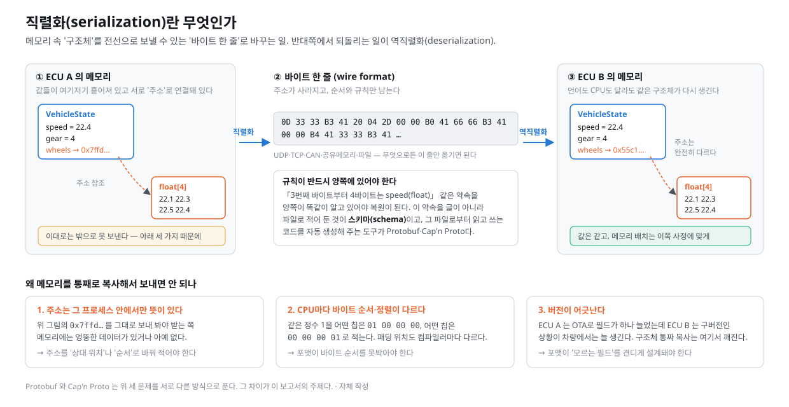
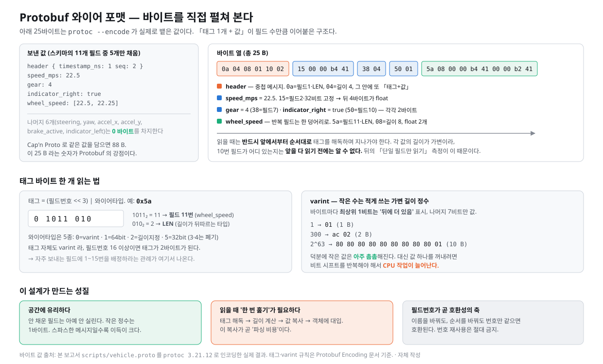
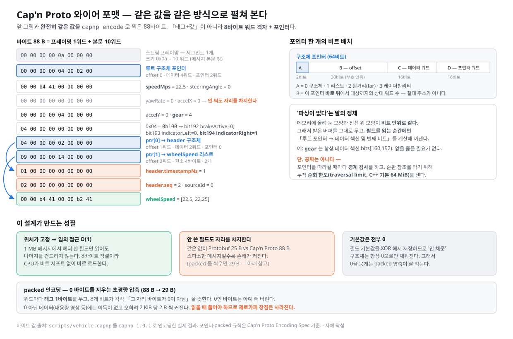
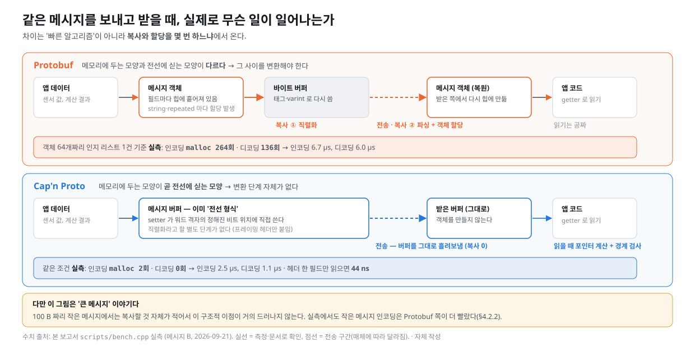
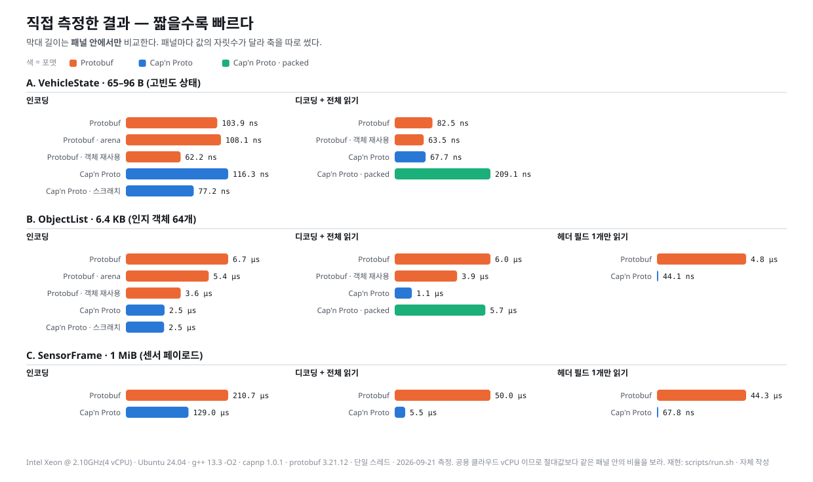
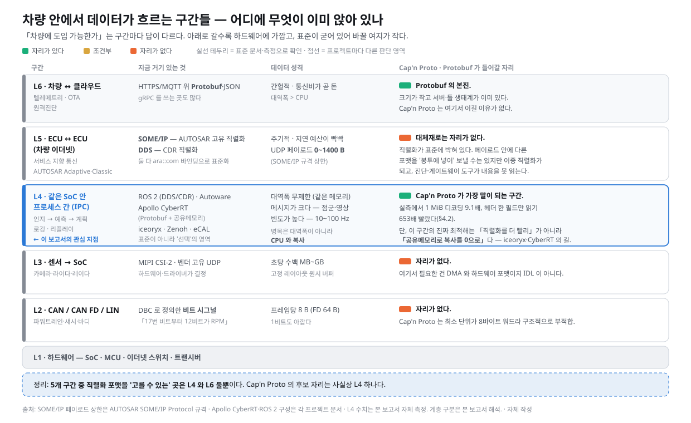
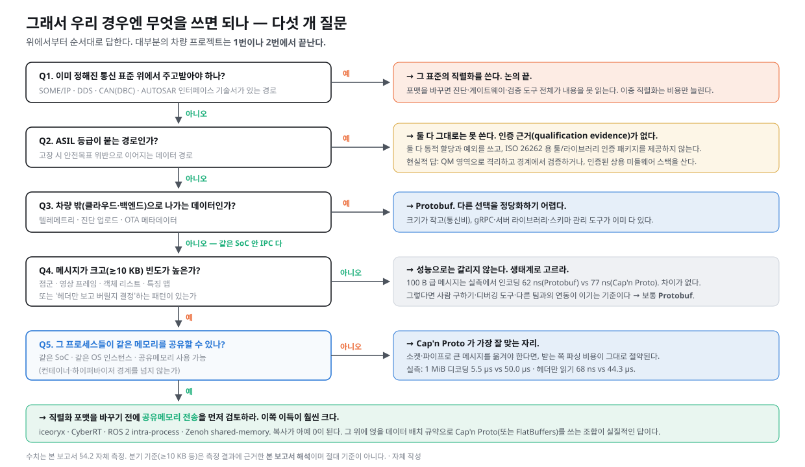

Research · 직렬화 포맷
Cap'n Proto vs Protobuf
"무한대로 빠르다"는 말은 사실이지만, 그 말이 성립하는 조건은 생각보다 좁다 — 직렬화를 0에서 이해하고, 차량에 쓸 수 있는지까지
scripts/ 로 직접 잰 값 ·
서드파티 언론·블로그·논문 ·
해석 본 보고서 판단 ·
미확인.
성능 수치는 자체 측정이 1차 근거이며, 공개 벤치마크는 교차 검증용으로만 썼다.
00요약
다섯 줄 요약
01기초
먼저, 직렬화란 무엇인가
프로그램이 다루는 데이터는 메모리 안에서 흩어진 채 주소로 연결되어 있다. 그런데 밖으로 나가는 통로(전선·파일·공유메모리)는 전부 "바이트가 한 줄로 늘어선 것"만 받는다. 흩어진 구조를 한 줄로 펴서 내보내고, 반대쪽에서 다시 구조로 되돌리는 일 — 그게 직렬화와 역직렬화다.

"그냥 메모리를 통째로 복사해 보내면 안 되나?" 싶지만 세 가지 이유로 안 된다.
| 문제 | 왜 |
|---|---|
| 주소는 그 프로세스 안에서만 뜻이 있다 | 0x7ffd… 를 그대로 보내 봐야 받는 쪽 메모리에는 엉뚱한 데이터가 있거나 아예 없다 |
| CPU·컴파일러마다 표현이 다르다 | 정수 1을 어떤 칩은 01 00 00 00, 어떤 칩은 00 00 00 01 로 적는다. 패딩 위치도 다르다 |
| 버전이 어긋난다 | 차량에서는 ECU A 만 OTA 되어 필드가 늘고 ECU B 는 구버전인 상황이 상시로 생긴다 |
JSON 은 이 문제를 텍스트로 푼다 — 읽히고, 어느 언어에나 파서가 있다. 대신 크고(숫자 22.5 를 네 글자로), 느리고(문자열→숫자 파싱), 약속이 코드 안에만 있다. 그래서 나온 것이 스키마 기반 바이너리 직렬화다. 약속을 파일(.proto, .capnp)에 적고, 그 파일로부터 읽고 쓰는 코드를 자동 생성하고, 바이트는 작고 빠르게 적는다.
Protobuf 와 Cap'n Proto 는 둘 다 이 부류다. 차이는 "바이트를 어떻게 적느냐" 하나뿐이고, 이 보고서의 나머지는 전부 그 이야기다.
02Protobuf
Protobuf — 무엇이고 어떻게 동작하나
구글이 만든 스키마 기반 바이너리 직렬화 포맷이자 코드 생성 도구. 구글 내부에서 쓰이다 2008년 공개됐고, 지금은 gRPC 의 기본 직렬화 포맷으로 사실상 업계 표준이다. 공식
와이어 포맷 해부 — 바이트를 직접 펼쳐 본다
차량 상태 스키마에 값 5개만 채워 protoc --encode 로 찍으면 25바이트가 나온다. 자체 측정

protoc 3.21.12 로 실제 인코딩한 결과이고, 태그·varint 규칙은 Protobuf Encoding 문서 기준. 자체 작성.태그는 (필드번호 << 3) | 와이어타입 이다. 0x5a 는 0 1011 010 이고 앞의 1011₂ = 11 이 필드 11번, 뒤의 010₂ = 2 가 "길이가 뒤따르는 타입"을 뜻한다. 공식
스키마 진화 규칙
| 해도 되는 것 | 하면 안 되는 것 |
|---|---|
| 새 필드 추가 (새 번호로) | 필드 번호 재사용 — 구버전이 옛 타입으로 읽어 조용히 오염된다 |
| 필드 이름 변경 | 필드 번호 변경 |
필드 삭제 후 번호를 reserved 로 봉인 | 삭제하고 번호를 방치 |
구버전이 모르는 필드를 버리지 않고 보관했다 다시 내보낸다(unknown fields). 다중 ECU 게이트웨이 구조에서 실질적인 안전장치다.
참고로 proto2 의 required 는 구글 스스로 "끔찍한 실수" 였다고 평가한다 — 필수를 선택으로 바꾸자 내용에 관심 없는 중계 인프라가 파싱 단계에서 통째로 실패해 무관한 시스템까지 멈춘 사고가 구글 내부에서 여러 번 있었다. proto3 에는 required 가 없다. (Cap'n Proto FAQ)
생태계 — 여기가 진짜 강점이다
- gRPC — 로드밸런싱·인증·스트리밍·관측이 통째로 딸려 온다
- 언어 — 구글이 직접 유지보수하는 런타임만 8종 이상 공식
- 툴 —
buf(린트·breaking change 검사·스키마 레지스트리), Wireshark 디시펙터 - 디버깅 —
protoc --decode로 바이트를 사람이 읽는 텍스트로 - 사람 — 백엔드 엔지니어 대부분이 이미 안다
03Cap'n Proto
Cap'n Proto — 무엇이고 어떻게 동작하나
Protobuf v2 의 주 설계자였던 Kenton Varda 가 구글을 나온 뒤 만든 후속작이다. 2013년 4월 1일 첫 공개, 2023년 7월 28일에야 1.0 — 10년 넘게 0.x 로 프로덕션에서 쓰이다 LTS 로 못박았다. 현재 사실상의 후원자는 Cloudflare 다. 공식
와이어 포맷 해부 — 8바이트 워드와 포인터
같은 값을 capnp encode 로 찍으면 88바이트. Protobuf 25 B 의 3.5배다. 자체 측정

capnp 1.0.1 로 실제 인코딩한 결과이고, 포인터·packed 규칙은 Encoding Spec 기준. 자체 작성.- 모든 것이 8바이트 "워드" 단위로 정렬된다
- 구조체는 데이터 섹션 + 포인터 섹션. 스칼라는 컴파일 타임에 정해진 비트 위치에 들어간다 — 이 스키마에서
gear는 항상bits[160,192)다 자체 측정 - 포인터는 절대 주소가 아니라 "이 포인터 바로 뒤에서 몇 워드" 라는 상대 위치다 — 버퍼를 통째로 옮겨도 유효하다
"파싱이 없다"는 말의 진짜 의미
진짜인 부분. 메모리 모양과 전선 모양이 비트 단위로 같다. 받은 버퍼를 그대로 두고, 필드를 읽는 순간에만 "루트 포인터 → 몇 번째 비트"를 계산한다. gear 를 읽는 데 드는 일은 덧셈 한 번과 로드 한 번이다.
packed 인코딩
워드마다 태그 1바이트를 두고 0인 바이트를 빼는 초경량 압축. 위 88 B 예제가 29 B 로 줄었다. 다만 0이 아닌 데이터(영상·점군)에는 이득이 없고 오히려 커진다 — 1 MiB 페이로드에서 packed 가 원본보다 1,186 B 더 컸다. 그리고 읽을 때 풀어야 하므로 제로카피 이점이 사라진다(디코딩이 3~5배 느려짐). 자체 측정
생태계 — 공식 문서가 직접 밝히는 현실
"C++ 이외 구현은 각 저자가 유지보수하며 내가 검토하지 않았다." 공식
| 구분 | 언어 |
|---|---|
| 직렬화 + RPC | C++(공식) · Rust · Go · Python · Haskell · OCaml · C# · Erlang · Node.js |
| 직렬화만 | C · Java · D · Lua · Nim · Ruby · Scala · JavaScript |
Java 가 "직렬화만" 칸에 있다는 점은 실무에서 꽤 크다 — 차량 툴체인·진단 도구에 Java/C# 기반이 적지 않다. 한편 Toyota 가 Cap'n Proto RPC 추적 도구 capnp-trace 를 공개해 공식 도구 목록에 올라 있다. 다만 양산 적용을 뜻하는지는 미확인.
04정면 비교
정면 비교

| Protobuf | Cap'n Proto | |
|---|---|---|
| 메모리 모양 vs 전선 모양 | 다르다 → 변환 필요 | 같다 → 변환 없음 |
| 아끼는 것 | 바이트 (대역폭) | CPU 사이클과 할당 |
| 읽기 비용 | 전체 O(n) 훑기 + 객체 생성 | 필드당 O(1) 포인터 계산 |
| 안 쓴 필드 | 0 바이트 | 자리를 차지 |
| 정수 표현 | varint (가변) | 고정폭 little-endian |
| 정렬 | 없음 (바이트 단위 촘촘) | 8바이트 워드 |
| 주된 무대 | 네트워크 API, 서비스 간 통신 | 같은 기계 안 IPC, 디스크, 공유메모리 |
4.2 성능 — 직접 측정
-O2 -std=c++17 · Cap'n Proto 1.0.1 / Protobuf 3.21.12 · 단일 스레드 · 루프 밖에서만 시계를 읽어 계측 오버헤드 배제.
공정성 장치 — Protobuf 에 arena 할당과 객체 재사용 + Clear() 변형을, Cap'n Proto 에 스크래치 버퍼 재사용 변형을 함께 넣었다. 이 둘 없이 재면 기울어진 비교가 된다.
재현: scripts/run.sh · 원시 로그 reference/bench-logs/
| 내용 | 크기대 | 재는 이유 | |
|---|---|---|---|
| A | VehicleState — 속도·조향·요레이트·4륜 속도 + 헤더 | 65~96 B | 100 Hz~1 kHz 주기 제어/상태 메시지 |
| B | ObjectList — 인지 객체 64개 (자세·속도·클래스·3×3 공분산) | 6.4 KB | 중첩·리스트가 많은 중간 크기 데이터 |
| C | SensorFrame — 헤더 + 1 MiB 바이트 블롭 | 1 MiB | 대용량 벌크. 제로카피 주장의 시험대 |

scripts/make_chart.py 가 results.csv 에서 자동 생성한다. 자체 작성.A. 65~96 B — 마케팅 문구가 성립하지 않는 구간
| 변형 | 인코딩 | 디코딩 + 전체 읽기 |
|---|---|---|
| Protobuf | 103.9 ns | 82.5 ns |
| Protobuf · arena | 108.1 ns | — |
| Protobuf · 객체 재사용 | 62.2 ns | 63.5 ns |
| Cap'n Proto | 116.3 ns | 67.7 ns |
| Cap'n Proto · 스크래치 재사용 | 77.2 ns | — |
| Cap'n Proto · packed | — | 209.1 ns |
arena 가 오히려 느려진 것(108.1 ns)도 같은 맥락이다 — arena 를 만들고 없애는 비용이 메시지 하나를 만드는 이득보다 크다. arena 는 한 arena 안에서 메시지를 여러 개 만들 때 효과가 나는 도구다.
B. 6.4 KB (객체 64개) — 격차가 벌어지기 시작하는 구간
| 변형 | 인코딩 | 디코딩 + 전체 읽기 |
|---|---|---|
| Protobuf | 6,705.6 ns | 6,027.9 ns |
| Protobuf · arena | 5,433.6 ns | — |
| Protobuf · 객체 재사용 | 3,595.6 ns | 3,929.5 ns |
| Cap'n Proto | 2,536.6 ns | 1,083.7 ns |
| Cap'n Proto · 스크래치 재사용 | 2,506.5 ns | — |
| Cap'n Proto · packed | — | 5,710.7 ns |
기본끼리 인코딩 2.6배 · 디코딩 5.6배. 최적화한 Protobuf 와 비교해도 인코딩 1.4배 · 디코딩 3.6배다.
C. 1 MiB — 제로카피가 제값을 하는 구간
| 변형 | 인코딩 | 디코딩 + 페이로드 전체 접근 |
|---|---|---|
| Protobuf | 210.7 µs | 50.0 µs |
| Cap'n Proto | 129.0 µs | 5.5 µs |
디코딩 9.1배. 페이로드를 실제로 쓰는데도 그렇다 — Protobuf 는 1 MiB 를 std::string 으로 복사하고, Cap'n Proto 는 버퍼 안을 그대로 가리킨다.
메시지 크기 — 통념이 반만 맞는 부분
| 메시지 | Protobuf | Cap'n Proto | Cap'n Proto packed |
|---|---|---|---|
| A (차량 상태) | 65 B | 96 B (1.48×) | 69 B (1.06×) |
| B (객체 64개) | 6,362 B | 6,712 B (1.06×) | 5,907 B (0.93×) |
| C (1 MiB) | 1,048,604 B | 1,048,656 B | 1,049,842 B (원본보다 큼) |
- 작은 메시지에서 Protobuf 의 크기 우위가 가장 크다(1.48배). 채운 필드가 적을수록 격차가 커진다.
- 필드를 빽빽이 채우면 차이가 거의 사라진다(1.06배). packed 를 쓰면 오히려 Cap'n Proto 가 7% 작았다 — "Cap'n Proto 는 항상 뚱뚱하다"는 통념은 조밀한 데이터에서는 틀렸다.
- A 메시지는 gzip 을 씌우면 셋 다 원본보다 커졌다(65 B → 76 B). 작은 메시지에 범용 압축은 역효과다.
메모리·할당 횟수 — 이 측정에서 가장 중요한 표
| 메시지 | 작업 | Protobuf | Cap'n Proto |
|---|---|---|---|
| A | 인코딩 | 3회 / 88 B | 2회 / 8,288 B |
| A | 디코딩 | 2회 / 64 B | 0회 / 0 B |
| B | 인코딩 | 264회 / 15,384 B | 2회 / 14,904 B |
| B | 디코딩 | 136회 / 11,032 B | 0회 / 0 B |
| C | 인코딩 | 4회 / 2,097,226 B | 7회 / 1,057,056 B |
| C | 디코딩 | 3회 / 1,048,649 B | 4회 / 192 B |
malloc 은 최악 실행시간을 예측 불가능하게 만드는 주범이다. 0회는 성능 숫자 이상의 의미가 있다.
단일 필드 랜덤 접근 — 결정적으로 갈리는 지점
| 메시지 | Protobuf | Cap'n Proto | 배수 |
|---|---|---|---|
| B (6.4 KB) | 4,817.3 ns | 44.1 ns | 109× |
| C (1 MiB) | 44,306.3 ns | 67.8 ns | 653× |
Cap'n Proto 는 메시지 크기와 무관하게 44~68 ns 다. 크기가 160배 늘어도 시간이 거의 안 변한다. Protobuf 는 헤더 하나 보려고 1 MiB 를 전부 파싱한다.
이게 추상적이지 않은 이유: "헤더의 타임스탬프나 소스 ID를 보고 처리할지 버릴지 결정"하는 패턴이 차량 SW 에 흔하다. 로그 리플레이의 시간 구간 필터, 게이트웨이의 라우팅, 오래된 프레임 드롭이 전부 이 패턴이다.
공정하게 덧붙이면 — Protobuf 도 메시지를 「작은 헤더 + 큰 본문」으로 쪼개면 같은 효과를 낼 수 있다. 포맷의 한계가 아니라 설계로 풀 수 있는 문제다. 차이는 Cap'n Proto 가 설계를 비틀지 않아도 공짜로 된다는 점이다. 해석
공개 벤치마크와의 교차 검증
| 주장 | 자체 측정과 비교 |
|---|---|
| "직렬화 단계가 없으므로 무한대로 빠르다" 공식 | 부분 일치. 인코딩이 memcpy 수준이 되지만 필드를 채우는 비용은 남는다. 메시지 A 인코딩에서 Protobuf 에 졌다 |
| "packing 을 켜면 Protobuf 와 비슷한 크기가 되면서도 더 빠르다" 공식 | 크기는 일치(B에서 7% 더 작음). 속도는 불일치 — packed 디코딩이 3~5배 느렸다. 비교 대상이 모호하다 상충 |
| "Cap'n Proto 전환으로 메모리 70% 감소" 서드파티 | 검증 불가. 대상 시스템·측정 방법 미공개. 인용하지 않았다 |
결론: 공식 문서의 정성적 주장(제로카피·임의 접근 O(1))은 자체 측정과 일치한다. 반면 "무조건 빠르다" 류의 요약과 출처 불명의 배수 수치는 재현되지 않거나 조건이 붙는다.
4.3 유지보수 관점
| 항목 | Protobuf | Cap'n Proto |
|---|---|---|
| 스키마 진화 | 성숙. reserved 봉인, unknown field 보존 | 원리는 같으나 번호가 0부터 연속이어야 해 더 뻣뻣 |
| 호환성 검사 도구 | buf breaking 등 성숙한 CI 도구 | 표준 도구 부재 — 사람이 리뷰로 막아야 함 |
| 러닝커브 | 낮음 | 중간. C++ 의 kj 툴킷이 진입 장벽 |
| 사람 구하기 | 쉬움 | 어려움 |
| 디버깅 | protoc --decode, Wireshark 디시펙터 | capnp decode, Wireshark 플러그인은 서드파티 |
실무에서 가장 크게 체감할 차이는 호환성 검사 도구의 유무다. 차량 SW 는 여러 팀이 여러 ECU 에 서로 다른 주기로 배포하므로, "이 스키마 변경이 구버전을 깨는가"를 CI 가 자동으로 잡아 주는지가 곧 사고 예방이다.
4.4 다른 SW와의 정합성
| 항목 | Protobuf | Cap'n Proto |
|---|---|---|
| RPC 표준 | gRPC — 업계 표준 | 자체 RPC. 상호운용 생태계 없음 |
| Java / C# | 1급 지원 | Java 는 직렬화만, C# 은 서드파티 |
| 스키마 레지스트리 | 상용·오픈소스 존재 | 없음 |
| AI/ML 파이프라인 | ONNX·TensorFlow 가 Protobuf 로 모델을 저장 | 없음 |
마지막 줄은 차량 AI 프로젝트에서 실질적이다. ONNX 모델 파일 자체가 Protobuf 이므로 추론 스택을 쓰는 순간 libprotobuf 는 이미 바이너리에 들어와 있다. "Protobuf 를 안 쓰면 라이브러리를 하나 줄인다"는 논리가 성립하지 않는다.
4.5 안전성·보안
| 항목 | Protobuf | Cap'n Proto |
|---|---|---|
| 신뢰할 수 없는 입력 방어 | 파싱 단계 구조 검증, 깊이 제한(C++ 100) | 포인터 경계 검사 + 순회 한도(64 MiB) + 깊이 제한(64) |
| 알려진 취약점 | 다수 — CVE-2022-1941, 2022-3171/3509/3510, 2024-7254 | 2015년 정수 오버플로 권고 1건이 대표적 |
| 공식 보안 검토 | 구글 내부 검토 + 대규모 퍼징 | "아직 받지 않았다"고 문서가 명시 |
| 검증 책임의 위치 | 파서가 일부 수행 | 명시적으로 애플리케이션에 떠넘김 |
취약점 개수만 비교하면 오해한다 — Protobuf 의 CVE 가 많은 건 사용자가 압도적이고 대규모 퍼징을 받기 때문이기도 하다. 오히려 주목할 것은 Cap'n Proto 가 "공식 보안 검토를 받지 않았다"고 스스로 밝히는 점이다.
speed_mps = 1e30 은 두 포맷 모두 정상 통과한다. 값 검증은 무조건 애플리케이션 몫이고, 차량에서는 이게 안전 요구사항으로 직결된다.
4.6 리소스 풋프린트
| 항목 | Protobuf | Cap'n Proto | 배수 |
|---|---|---|---|
| 생성 코드 | 4,525줄 / 153,840 B | 2,153줄 / 81,620 B | 2.1× |
| 오브젝트 파일 | 110,328 B | 9,976 B | 11.1× |
| 런타임 공유 라이브러리 | 3,056,272 B | 1,082,120 B (capnp+kj) | 2.8× |
| 경량 런타임 | 850,984 B (lite) | 해당 없음 | — |
주의: Protobuf 에는 리플렉션·TextFormat 을 뺀 lite 런타임(851 KB)이 있고 임베디드에서는 보통 이쪽을 쓴다. 반대로 빌드 의존성은 Cap'n Proto 가 유리하다 — 최신 Protobuf 는 Abseil 에 의존해 의존성 트리가 커졌고, Cap'n Proto 는 외부 의존성이 사실상 없다.
4.7 라이선스·거버넌스·지속성
| 항목 | Protobuf | Cap'n Proto |
|---|---|---|
| 라이선스 | BSD 3-Clause | MIT |
| 소유·운영 | Kenton Varda 개인 + Cloudflare 후원 | |
| 릴리스 주기 | 분기 단위, 지원 기간 명시 | 부정기. 0.x 에서 1.0 까지 10년 |
| 버스 팩터 | 낮음 (조직 차원) | 높음 — C++ 구현이 사실상 한 사람 |
차량 프로젝트에서 이건 성능만큼 중요하다. 양산 차량은 10년 이상 필드에 남고 그동안 보안 패치를 받아야 한다. 다만 반대로 볼 여지도 있다 — Cap'n Proto 는 MIT 이고 런타임이 1 MB 급이라 최악의 경우 직접 포크해 유지할 수 있는 규모다. 3 MB 짜리 libprotobuf 보다 그게 현실적이다. 해석
05차량 적용
차량에 도입 가능한가
결론부터 말하면 "어디에 쓰느냐"에 따라 답이 완전히 갈린다.

| 구간 | 지금 거기 있는 것 | 포맷을 고를 수 있나 |
|---|---|---|
| L6 차량 ↔ 클라우드 | HTTPS/MQTT 위 Protobuf·JSON | 고를 수 있다 — 이미 Protobuf 의 본진 |
| L5 ECU ↔ ECU (차량 이더넷) | SOME/IP, DDS(CDR) | 불가 — 표준에 박혀 있음 |
| L4 같은 SoC 안 IPC | ROS 2, CyberRT, iceoryx, Zenoh… | 고를 수 있다 — 유일한 후보 자리 |
| L3 센서 → SoC | MIPI CSI-2, 벤더 고유 UDP | 불가 — 하드웨어가 결정 |
| L2 CAN / CAN FD / LIN | DBC 비트 시그널 | 불가 — 8~64 B 프레임에 부적합 |
5.2 기존 표준과의 정합성
SOME/IP. AUTOSAR Adaptive·Classic 양쪽에서 서비스 지향 통신의 사실상 표준이고, 직렬화 규칙이 규격 문서에 정의돼 있다. 인터페이스 기술서(ARXML)에서 코드와 진단 설정이 함께 생성되므로 직렬화만 갈아끼우는 것이 개념적으로 불가능하다. 공식
기술적으로 페이로드 안에 다른 포맷을 "봉투에 넣어" 보낼 수는 있다. 그러나 ① 이중 직렬화가 되고 ② 게이트웨이·진단 장비가 내용을 해석하지 못하며 ③ UDP 페이로드가 0~1400 B 로 제한되어 Cap'n Proto 의 크기 손해가 그대로 상한을 압박한다. 해석
DDS(CDR). ROS 2 와 AUTOSAR AP 의 DDS 바인딩이 쓰는 직렬화도 표준 고정이다. 다만 DDS 쪽은 제로카피 공유메모리 전송을 지원하는 구현이 있고, 최적화된 스택에서 2 MB 통신이 12 ms → 3 ms 로 줄었다는 벤더 보고가 있다. 서드파티
CAN / CAN FD. 프레임이 8 B(FD 는 최대 64 B)라 두 포맷 모두 오버헤드가 과하고, Cap'n Proto 는 최소 단위가 8바이트 워드라 구조적으로 부적합하다.
5.3 이웃 기술들 — 사실 경쟁자는 Protobuf 가 아니다
L4 에서 Cap'n Proto 의 실질적 경쟁자는 Protobuf 가 아니라 "복사를 아예 없애는 전송 계층" 이다.
| 기술 | 무엇인가 | Cap'n Proto 와의 관계 |
|---|---|---|
| FlatBuffers | 구글의 제로카피 직렬화 | 가장 직접적인 경쟁자. 스칼라 타입 단위 정렬로 공간 효율이 낫고, 구글 유지보수라 지속성도 낫다 |
| iceoryx / iceoryx2 | Eclipse 재단의 제로카피 공유메모리 IPC | 보완재. 전송에서 복사를 0으로. 그 안에 담을 배치 규약으로 Cap'n Proto 를 쓸 수 있다 |
| Apollo CyberRT | Baidu Apollo 의 미들웨어 — Protobuf + 공유메모리 | 반례. 큰 데이터는 공유메모리로 직접 넘겨 직렬화를 우회하고, 포맷은 Protobuf 를 유지했다 |
| ROS 2 / DDS | CDR + DDS 전송. Autoware 의 기반 | 스택 전체를 바꿔야 해 현실적 대안이 아니다 |
| Zenoh | pub/sub + 공유메모리 | 보완재 |
5.4 기능안전·양산 관점 — 여기가 진짜 관문이다
① 동적 메모리 할당. AUTOSAR C++14 가이드라인은 동적 할당을 전면 금지하진 않지만 결정적 WCET·무단편화·고갈 없음을 요구한다(A18-5-5 커스텀 메모리 관리자, A18-5-7 비실시간 구간에서만 할당). 공식 Protobuf 는 파싱마다 힙을 쓰고(객체 64개에 136회), Cap'n Proto 는 디코딩 0회로 유리하다 — 다만 인코딩 쪽은 스크래치 버퍼로 우회해야 한다.
② 예외. Cap'n Proto C++ 구현은 kj 툴킷 위에 있고 포인터 검증 실패 시 예외를 던지는 것이 기본 경로다. 예외 없는 빌드를 지원하긴 하나, 문서는 "예외를 못 쓰면 동적 API는 피하라" 고 권고한다. 예외를 금지하는 차량 프로젝트에서 실질적 제약이다. 공식
④ 결정성. "크기 무관 O(1) 접근"과 "디코딩 할당 0"은 최악 실행시간(WCET) 분석에 유리한 성질이다. 반면 Protobuf 의 varint 디코딩은 값에 따라 루프 횟수가 달라져 WCET 상한이 데이터 의존적이다. 해석
5.5 보안 관점
UN R155/R156 이 형식승인 요건이 되면서 외부에서 들어오는 데이터를 처리하는 모든 파서가 공격면으로 간주된다. 텔레매틱스·V2X 처럼 차량 외부에서 데이터가 들어오는 경로에는 "공식 보안 검토를 받지 않았다"는 사실만으로도 Cap'n Proto 채택 근거가 약해진다. 반대로 차량 내부 신뢰 경계 안이라면 위협 모델이 달라진다.
5.6 현실적인 도입 시나리오
| 시나리오 | 판정 | 이유 |
|---|---|---|
| ECU 간 SOME/IP 통신 교체 | 안 된다 | 표준이 직렬화를 규정. 진단·게이트웨이 도구 무력화 |
| CAN 시그널 교체 | 안 된다 | 8 B 프레임에 8 B 워드 정렬은 구조적 부적합 |
| 클라우드 업링크 교체 | 하지 말 것 | 크기 손해 + 백엔드 생태계 부재 |
| 같은 SoC 안 인지 파이프라인 IPC | 검토할 만하다 | 큰 메시지 · 고빈도 · 부분 읽기 패턴. 측정 근거가 가장 강하다 |
| 로그 기록·리플레이 포맷 | 가장 유망하다 | mmap 후 헤더만 보고 구간 필터링 → 653배 이점이 그대로. 안전 경로 밖이라 인증 부담도 없다 |
| ASIL-B 이상 제어 경로 | 그대로는 안 된다 | 인증 근거 부재 + 예외/동적할당 이슈 |
| 프로토타입·연구용 스택 | 자유롭게 | 제약이 없다 |
5.7 도입 의사결정 흐름도

06결론
언제 무엇을 쓰나
| Protobuf 를 쓴다면 | Cap'n Proto 를 검토한다면 | 둘 다 쓰지 않아야 하는 곳 |
|---|---|---|
| · 차량 밖으로 나가는 모든 것 · 메시지가 작고(≲1 KB) 빈도 높은 경우 · 여러 팀·여러 언어가 얽힌 인터페이스 · 스키마 호환성을 CI 로 지켜야 할 때 |
· 같은 SoC 안, 큰 메시지(≳10 KB), 고빈도 IPC · "헤더만 보고 처리 여부 결정" 패턴 · 로그 기록·리플레이 포맷 · 힙 할당을 억제해야 하는 실시간 경로 |
· SOME/IP·DDS·CAN 처럼 직렬화가 표준에 박힌 구간 · 인증 근거 없이 ASIL 등급이 붙는 경로 |
"모든 게 다 좋을 것 같진 않다"는 처음의 직감은 맞았다. Cap'n Proto 는 특정 조건에서 진짜로 압도적이고, 그 조건 밖에서는 평범하거나 오히려 손해다. 그리고 차량에서 그 조건이 성립하는 구간은 생각보다 좁다.
07한계
미확인·상충 항목
| 항목 | 상태 |
|---|---|
| 두 프로젝트의 ISO 26262 인증 패키지 제공 여부 | 미확인 양쪽 공식 문서에서 언급을 찾지 못함. "제공하지 않는다"는 본 보고서 추정이며, 상용 벤더가 포장해 제공하는 사례가 있을 수 있음 |
Toyota capnp-trace 의 양산 적용 여부 | 미확인 도구 공개 사실만 확인 |
| "packed 로 Protobuf 크기에 근접하면서도 더 빠르다" | 상충 크기는 일치(B에서 7% 작음), 속도는 불일치(packed 디코딩 3~5배 느림). 비교 대상이 Protobuf 인지 자기 자신인지 원문이 모호 |
| "Cap'n Proto 전환으로 메모리 70% 감소" 류 서드파티 수치 | 검증 불가 대상 시스템·측정 방법 미공개. 본문 미채택 |
| ARM 차량용 SoC 에서의 성능 배수 | 미측정 x86 결과만 있음. 비정렬 접근 페널티 차이로 달라질 수 있음 |
| Protobuf 최신 릴리스(30번대)의 성능 개선 폭 | 미확인 배포판 3.21.12 로만 측정 |
| CANoe 등 차량 진단 툴의 Protobuf 페이로드 해석 지원 | 미확인 1차 출처 확인 못함 |
| 공식 문서 원문 접근 | 조사 환경의 egress 정책으로 capnproto.org 등 직접 접근 차단. 동일 내용의 업스트림 저장소로 검증했고, 인용은 정본 URL 과 원문 파일 URL 을 함께 표기 |
08출처
출처
상세 수집·검증 기록: reference/references.md
자체 측정 1차 근거
bench.cpp · vehicle.proto · vehicle.capnp · alloc_counter.c · run.sh · make_chart.py · 원시 로그 reference/bench-logs/
공식 Cap'n Proto (정본 URL · 검증에 사용한 업스트림 원문)
Encoding Spec · doc/encoding.md
FAQ · doc/faq.md
C++ Serialization · doc/cxx.md
Schema Language · Other Languages
Cap'n Proto 1.0 릴리스 노트 · Cap'n Proto, FlatBuffers, and SBE · Security Advisory 2015
공식 Protobuf
Encoding · Proto3 Language Guide · Arena Allocation · Version Support · Proto Limits · GHSA-735f-pc8j-v9w8 (CVE-2024-7254)
공식 차량 표준
AUTOSAR SOME/IP Protocol Specification R23-11 · AUTOSAR C++14 Guidelines R22-11 · Explanation of ara::com API
서드파티
RTI — Implementing AUTOSAR's DDS Network Binding · A Faster and More Reliable Middleware for Autonomous Driving Systems · Autoware·Apollo 비교 · Apollo 소프트웨어 플랫폼 문서 · Toyota/capnp-trace · MathWorks — AUTOSAR C++14 A18-5-7 · Parasoft — AUTOSAR C++14 해설